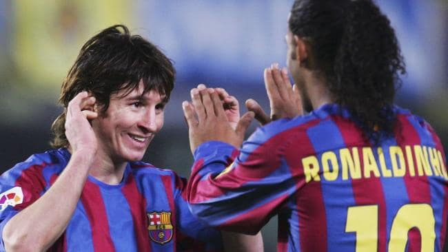
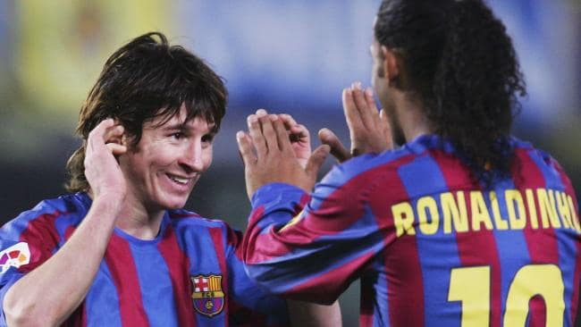

A STAR IS BORN
Lionel Andres Messi Cuccittini was born on 24 June 1987 in Central Argentina. Messi was diagnosed with a growth deficieny hormone at an early age. He relocted to Spain at 13 to begin his career in profeessional football.
Messi gave his first trial in front of Barcelona representative, who decided to sign him in return for incurring the costs of his treatment. His first Contract was written and signed on a napkin.
After signing for Barcelona, Messi developed and rose through the ranks of Barccelona youth academy, La Masia. He made his senior debut on 16th October 2004 at the age of 17. His first ever goal for Barce0lona came courtesty of a Ronaldinho assist on 1st May 2005.
From there on it has been a journey of magic and wonderment.
FROM BOY TO MAN
Messi's early years of the career were hampered with injuries. He tore his hamstring and had to miss the 2006 Champions League final which Barcelona eventually won. He again suffered from a metatarsal fracture on 12 November 2006 which kept him out for 3 months. He suffered minor injuries during this time as well. The injuries although did not stop his astronomical rise. he started out as a teenage prodigy but soon was seen as one of the best players in the World. Although, he did miss the 2006 Champions league final, he was a big factor to Barcelona reaching it. While Barcelona hit a bit of slum after the final, Messi continued lightning up the Camp Nou.
ENTER GUARDIOLA
After a trophyless season under Rijkard, Barcelona appointed a new manger, Former Barcelona Captain Pep Guardiola. Pep's coaching ideas were massively influenced by Johan Cruijff, who he played under and won the champions league with. Guardiola sold Ronaldinho aand made Messi the focal point of Barcelona's attack. He successfully turned Messi from a winger to a false-9. This new role allowed Messi a lot more freedom and this resulted in him showcasing the World his magic. Guardiola along with Messi went on to win their first ever treble. Messi went on to score 42 goals that season and providing 18. This resulted in him being the youngest ever player to win the balon d'or. Throughout Guardiola's tenure Messi gave Barcelona fans many performance to remember. His best being the 2011 Cl final performance against Manchester United. It is widely considered to be the greatest performance in a Cl final. Messi under Guardiola won 2 Champions league, 3 league titles, 1 copa del rey, 3 spanish supercups, 2 UEFA supercups and 2 Club Worldcups.
RECENT YEARS
Messi went on to win 5 Balon D,ors as well as several other major trophies. He also broke the record for most goals in a calender year. Messi, in 2015 under Luis Enrique lead Barcelona to another treble. After Iniesta's departure in 2018 he was named captain of the Barcelona side. Messi has also led Argentina to 3 finals but hasn't been able to win a single. Two of them being decided on penalties and another one was lost in Extra time. Throughout his career he has been compared to Maradona stylistically. Although Messi's consitency of goals, assists, and passes make him a lot better player than Maradona ever was. What he has done with a football on his feet has never been done before. He has consistently pulled things off that are deemed impossible for anyone else. Messi is the epitome of football and he is the greatest footballer this game has ever seen.